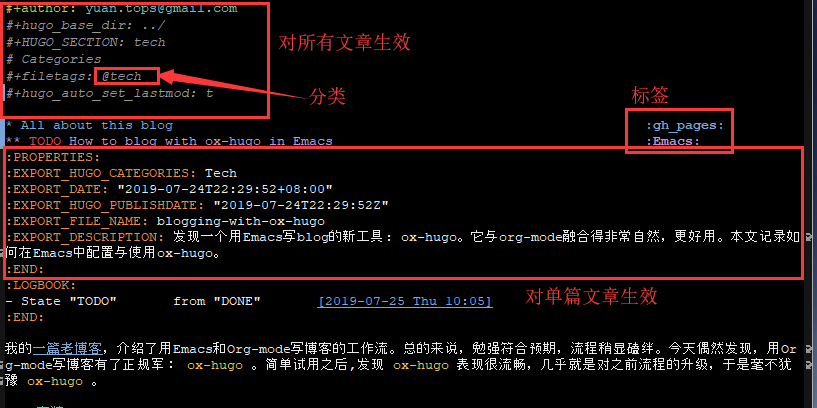

Table of Contents
1 All about this blog gh_pages
1.1 TODO How to blog with ox-hugo in Emacs Emacs
我的一篇老博客，介绍了用Emacs和Org-mode写博客的工作流。总的来说，勉强符合预期，流程稍显磕绊。今天偶然发现，用Org-mode写博客有了正规军： ox-hugo 。简单试用之后,发现 ox-hugo 表现很流畅，几乎就是对之前流程的升级，于是毫不犹豫 ox-hugo 。
1.1.1 安装
ox-hugo 是一个工作在Org-mode的Emacs包，安装过程可以说平平无奇：
M xpackage-refresh-contents:: 更新安装源- 添加Emacs配置。修改细节与Emacs配置风格相关，我使用Purcell维护的.emacs.d配置，仅供参考。
在
.emacs.d/lisp/目录下，新增配置文件init-ox-hugo.el1: (require-package 'ox-hugo) 2: 3: (with-eval-after-load 'ox (require 'ox-hugo)) 4: 5: (provide 'init-ox-hugo) 6:
在入口配置文件
.emacs.d/init.el中，引用新增的配置文件(require 'init-ox-hugo)
1.1.2 写博客的新流程
现在，org文件可以直接导出为Hugo支持的Markdown格式了。这一点 ox-pandoc 也能做到，但 ox-hugo 还能做得更多。
回顾之前的工作流:
- 新建xx.org文件
输入二级标题，接着插入
front matter。front matter内容大致如下：+++ title = "" date = "" Categories = ["Tech"] Tags = ["Emacs"] Description = "" keywords = [""] +++
- 写博客正文
- 按下
C-c C-e, 将二级标题对应的subtree导出为Markdown格式文件 - 将Markdown格式文件保存到contents/tech/目录。
front matter 是hugo渲染文件需要的必要元信息, 例如文章标签、分类、标题等。ox-hugo改进之一，是使用org-mode语法放置元信息，不再需要手动设置 front matter 。
Org-mode支持为headline设置 tags。 ox-hugo 沿用这点，org-mode的tag就是文章标签, 以@开头的tag就是文章分类。其他例如作者、日期、文件名的元信息，通过 :PROPERTIES: 设置。在导出Markdown格式时，ox-hugo会自动提取这些数据。因为ox-hugo可以一次导出所有subtree，因此 ox-hugo 官方推荐做法是，所有文章放到一个org文件，每个Subtree对应一篇文章。
对于习惯一个org文件对应一篇文章的作者而言，ox-hugo也予以尊重，在文件头添加对应配置项即可。
1.1.3 我的实践
对本博客而言，考虑到1)文章固定只有3个分类，2)现在已有很多存量md格式的文章，我采取一种折中做法: 一个分类对应一个org文件，org文件里每个subtree对应一篇文章。这样兼顾现状，而且新文章顺利迁移到新做法。就每个org文件来说，元信息分为两大类：
对整个文件都生效的配置，放到文件开头；
#+author: yuan.tops@gmail.com #+hugo_base_dir: ../ #+HUGO_SECTION: tech # Categories #+filetags: @tech #+hugo_auto_set_lastmod: t
对单篇文章生效的配置，放到subtree的标题下面。
:PROPERTIES: :EXPORT_HUGO_CATEGORIES: Tech :EXPORT_DATE: "2019-07-24T22:29:52+08:00" :EXPORT_HUGO_PUBLISHDATE: "2019-07-24T22:29:52Z" :EXPORT_FILE_NAME: blogging-with-ox-hugo :EXPORT_DESCRIPTION: 发现一个用Emacs写blog的新工具: ox-hugo。它与org-mode融合得非常自然，更好用。本文记录如何在Emacs中配置与使用ox-hugo。 :END:
以本文为例，配置如图: 
2 Golang is
great :Golang: